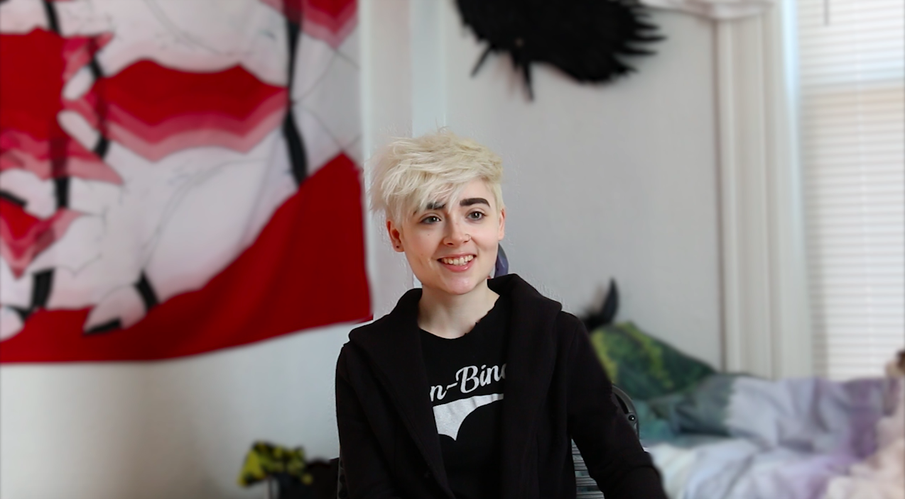
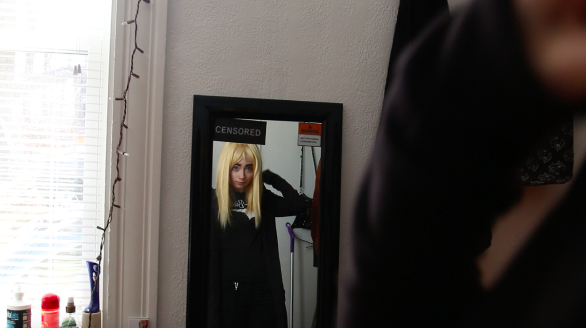
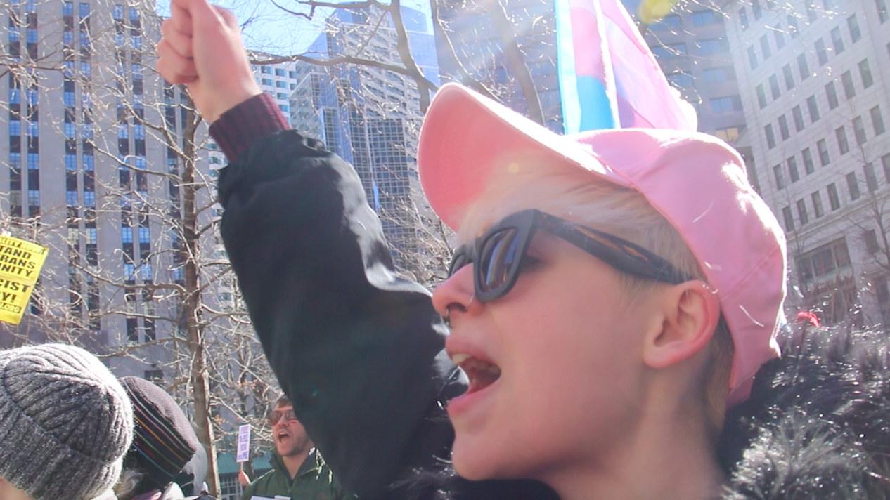

A new
identity
beyond he and she
The fight over pronouns is only part of the struggle for non-binary transgender people
Step into Rat’s bedroom and you quickly learn that this is a person not afraid of expressing themselves. This is the room of a musician, artist, child model, YouTuber, and budding entrepreneur for a small apparel company. A guitar rests in the corner, waiting to be picked up. Clothes in bold colors and designs line the racks. But despite all of these avenues for expression, there is one deeply personal message that this performer wants heard more than anything else.
“Our beautiful, unfortunately mismatched bodies are mangled with stab wounds, angry men’s fury,” declared Rat Gemmiti, now 20, in a poem delivered to high school peers in the student library. And with that, Rat, who grew up in New York City, told their high school and the world that they were non-binary transgender. It was January 16, 2015.
Rat entered a new world of self-awareness and discovery. No longer did Rat refer to themselves as “male” or “female.” Since that day, Rat has preferred the pronouns “they” or “them,” a practice that is common among the increasing number of people who identify as non-binary.
“Non-binary” is a term unfamiliar to many, but it has been adopted by a subset of transgender people who identify as neither male or female, or both male and female at the same time. Actresses like Caitlyn Jenner and Laverne Cox have helped bring the transgender community into the spotlight, paving the way for greater acceptance of their identities, but non-binary is a category much less well-known or understood.
Jamie Shupe stands proudly outside the DMV, with their newly issued license. Photo courtesy of Jamie Shupe
In Portland, Oregon, 53-year-old Jamie Shupe, who also uses the pronoun “they,” has achieved a remarkable victory as a non-binary transgender person. They became the first person to obtain a driver’s license with the gender “X,” the state’s designation for those who identify as neither male or female, and who are demanding that society and its institutions recognize them for who they are.
Shupe was denied the right to explore gender and sexual orientation as a youth and while in the military. Shupe has been retired for two years and has gone through hormonal treatments “trying desperately to turn my body into something that resembled a female.” But through the hormonal treatments, Shupe said they realized that trying to achieve a different gender wasn’t going to work.
"After living as a transgender female for three and a half years, I ultimately concluded that I was best served by being removed from the gender binary," they admitted. "The non-binary space is the least harmful place for me to occupy as a gender variant, because there are no rules or stereotypes like the binary sexes have.
"The key to helping me fix my gender dysphoria problem was to remove me from the male classification that was harming me. But at the same time, helping me wasn't to put me into a female classification, because I can never actually become a female.
It is estimated that non-binary individuals make up at least 25 percent of transgender populations, according to the Society For The Psychological Study of LGBT Issues. Non-binary transgender people face a struggle for acceptance not only from family and society, but also from the LGBTQ community.
“When I first found out what the word ‘non-binary’ was, I had that moment where the floor bottomed out and I was like, ‘Oh my God! Everything makes sense!’” Rat said.
Behind Rat's winning smile is a long journey of realizing their gender identity. Photo credit: Yan Wu
After they came out as non-binary, Rat named themselves after a Japanese animation character named Nezumi, which means “rat” in English. Rat describes their namesake as a “post-apocalyptic cross-dressing badass.”
“I figured I’d start with the name and go from there,” Rat said of aspiring to be a “badass” like Nezumi, adding that they took inspiration “from the first representation of people like me who don’t fit in a box.”
But getting to that place has not been easy. Rat has faced mental health issues because of their identity.
Rat finds solace in expressing themselves with a bold fashion sense. Photo credit: Yan Wu
“I was struggling with body dysmorphic issues and eating disorders, and I just really didn’t know what was going on,” Rat said of their early teenage years. Coming out as non-binary “helped me [understand myself] better physically and mentally. It overall bettered my life,” they said.
Though Rat and Shupe have finally found a label and have accepted their nonconformity to traditional gender definitions, they still face difficulties while navigating relationships and communicating their identity to others. They often face hostility and ignorance.
“You can’t exactly come out to the whole world at once. Every time you meet a new person, every time you see a family member that you haven’t seen in a long time, it’s the same conversation over and over again,” Rat said. “I’m constantly coming out to people.”
For others, identifying as non-binary didn’t come in a moment of epiphany. Gender identification is not only about one’s own experience of gender, but is also based on what we’ve been taught about gender and what we have internalized starting at birth, according to Margot Abels, a professor focused on gender studies at Northeastern University.
Shupe did not start exploring gender and sexual orientation until their 50s. “Both my mother and the U.S. military were highly abusive, punishing, and hostile” when facing Shupe’s sexuality and gender, they said.

Left to right: childhood photo of Shupe in Maryland; Shupe's military portrait; celebrating their court victory. Photos courtesy of Jamie Shupe
After hormone treatments, Shupe grew breasts, achieving a “little piece of womanhood.” But after living as a transgender female for three and a half years, Shupe concluded that they didn’t identify with the binary definitions of gender, and that they are a “mixture of the two sexes.”
This realization was painful and caused new concerns. “As part of the LGBT community, I feel like I have to be hyper-vigilant and alert for danger in public,” Shupe explained. Shupe has been treated for PTSD and gender dysphoria.
With hardly any data or surveys conducted exclusively on non-binary transgender people in the U.S., it is hard to infer how many have experienced mental health issues related to gender. However, The U.S. Transgender Survey found that 39 percent of respondents experienced serious psychological distress, compared with 5 percent of the U.S. population, and 40 percent of respondents attempted to commit suicide at some point in their lifetime, nearly nine times the rate for the non-transgender U.S. population. Though the survey only sampled 28,000 people, it is indicative of wider spread mental health struggles in the transgender population.
Rat has met many people who try to convince them that they are not transgender, just mentally ill. Some have treated their identity as an affliction, and suggested they just need therapy and to “get better.”
Even their closest family members and friends doubted Rat’s explanation of their identity.
“My mom just started using my name and pronouns last summer,” Rat said while explaining that their mother took time to become accepting. However, their father still doesn’t recognize Rat’s preferred name and pronouns.
Sometimes, their friends would say, “You have a wig on today, can I call you a girl?” No matter Rat’s outward appearance, the answer doesn’t change. “No. Still the same thing,” they said of their gender.
Having spent 18 years living in fear about who they are, Shupe understands what it’s like to be on the receiving end of discrimination for being gay and trans, especially in the military.
Shupe has leveraged their experience into activism. They filed the petition for changing their gender to non-binary on April 27, 2016 and became the first person in the United States who was legally recognized as a non-binary person on June 10, 2016.
Shupe worries more about their daughter experiencing backlash from their identity than themselves. “She’s dating and looking to get married and I’m a difficult thing to explain to the family of a boyfriend. And because I’ve had so much media coverage, there’s a good chance that her coworkers will tie her to me and possibly treat her negatively,” they said.
Shupe knows the pain of discrimination firsthand. “In addition to upsetting a lot of binary trans folks, I’ve upset a lot of religious elements in this country even more,” Shupe said. “They make that known in the comments section of articles about me.”
Rat has also been the target of hostility.
Rat has received death threats and vicious comments from people on the internet, including “I want to shoot you,” and “I hope someone hurts you.” It got so bad that Rat finally shut down their account on the website that they refrained from naming. “I have moved on,” Rat said.
Rat participates in community gatherings advocating for non-binary rights. Photo credit: Yan Wu
Finding empathy and a sense of belonging in the LGBTQ community has been difficult, too.
“I really want binary trans people to start including us because sometimes they can be just as bad as cis[gender] people,” Rat said. “They push us out of the community. They think we’re the ones confusing everybody and we’re the reason that they don’t have all the rights that they want.”
Shupe has another perspective. “Our population group has received zero representation from the trans legal organizations. They’re instead filing lawsuits for binary bathroom access to affirm their binary trans identities,” they said. When Shupe tried to fight their battle for a legal identity, they had to hire a private lawyer.
“I broke the gender binary for $1,056,” Shupe said, referring to their legal fees.
Other states are also recognizing non-binary transgender people. The District of Columbia began offering the gender-neutral choice of “X” on driver’s licenses and identification cards in June, one month before Oregon started doing the same. And California’s Senate passed a similar law while legislation has been introduced in New York. Karen Spilka, a Massachusetts state senator, proposed a law on October to make the state one of the first in the nation to have gender neutral driver's licenses and ID cards.
However, the success is fragile. Attorney General Jeff Sessions released a memo reversing a three-year-old Justice Department policy protected transgender workers from discrimination under federal law on October 4, which civil rights groups accused of “yet another rollback of protections for LGBTQ people.”
Is it necessary for society to understand the non-binary community?
“From a social justice perspective, absolutely. If we care about the health of different populations,” Margot Abels explained. “It helps us think differently about our relationship to our gender and how other people experience their gender.”
Rat continues to don bold wigs and outfits depending on their mood, refusing to adhere to any outward expectations of gender.

"I am the world's most fashionable gentleman." Photo credit: Yan Wu
One recent afternoon, Rat was dressing up. They put on a black corset and a pink dress hand-embroidered with the words “he” and “him” repeated on the bodice. They donned a wig with long platinum blonde curls, using their thumbs to tuck in stray hairs.
“Now I’m beautiful,” Rat said, as they twirled around and smiled.
They took off the statement dress and put on a black suit paired with a mid-length black fishnet skirt, while proclaiming, “Now I’m the most fashionable gentleman in the world.”
Rat’s expression of gender fluidity is what Shupe envisions for society.

Shupe overlooks the serene Oregon landscape, hoping for equal serenity in society. Photo courtesy of Jamie Shupe
“We just want to exist at our most core human level, free of harassment for doing so,” Shupe said. “I want to see a society that’s been rebuilt and stripped of its existing hierarchies of things like sex and race. I think the non-binary community has the ability and vision to lead us into that future.”